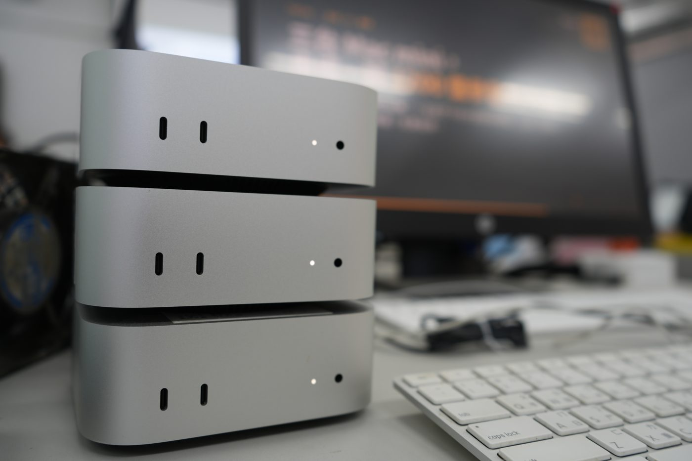

這就是你眼前的 EXO-LLM：一台放不下的大型語言模型，三台一起跑。Python 課程與 AI 專題，免費使用。

EXO 是開源的「分散式推論」軟體。它把大型語言模型的 36 層切成三段，每台 Mac mini 負責一段，算完就透過 Thunderbolt 線把結果接力傳給下一台。
就像一本一個人搬不動的厚書，拆成三冊、三個人一起搬。
秘密在於「混合專家」（MoE）架構：1200 億參數中，每產生一個字只用到約 50 億。
雲端 AI 依用量計費，迴圈寫錯一晚就能燒掉幾千元。這裡練習一毛都不用花。
你送出的內容只在這三台電腦間處理，不會傳到任何雲端公司。
和 ChatGPT API 一模一樣的寫法。學會了，換成任何雲端服務只要改一行網址。
模型就在你眼前運作。分層、記憶體、網路、耗電都能觀察，甚至拿來當科展題目。
在 PyCharm 裡解釋錯誤、改寫程式、產生測試資料。
聊天機器人、自動出題、作文回饋、會說話的遊戲 NPC。
把校規、課本、籤詩做成「只根據資料回答」的問答系統。
讓 AI 自己決定什麼時候呼叫你寫的 Python 函式。
分散式運算、量化、耗能、多人排隊，都是少見的題目。
讓 AI 輸出程式能直接讀取的資料格式。
輸入、輸出、限制
說清楚
一次只做
一個小功能
用自己的資料
真的跑跑看
問「為什麼」
不只是「幫我修」
看懂每一行
再往下做
AI 會出錯，而且出錯時語氣一樣很有自信。程式一定要自己測試。
from openai import OpenAI client = OpenAI(base_url="http://192.168.16.233:4000/v1", api_key="你的API key") r = client.chat.completions.create( model="gpt-oss-120b", messages=[{"role": "user", "content": "用一句話介紹 Python"}]) print(r.choices[0].message.content)
設定教學、範例程式、PyCharm 設定都在這裡：
API key：請向資訊老師申請（一人一把）